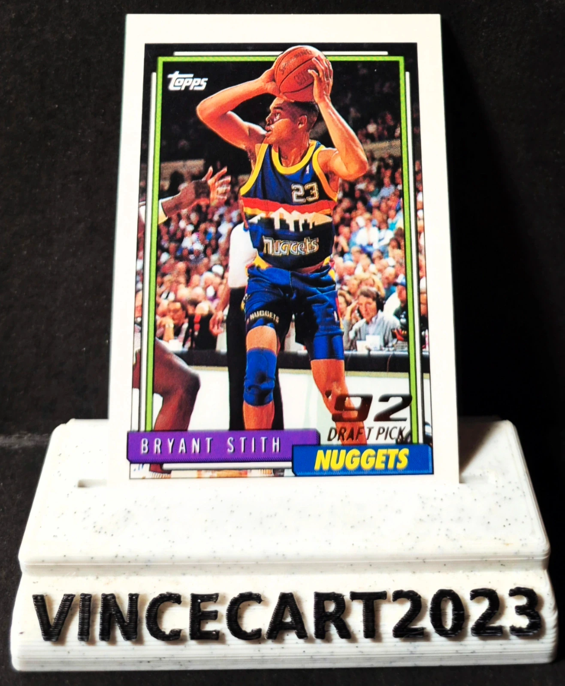

Carte NBA Bryant Stith Rookie Draft Pick 1992 Topps #341 Denver Nuggets Vintage
1,25 €
🏀 Carte NBA originale Topps 1992-93 de Bryant Stith, sélection du 1er tour de la Draft NBA 1992 (13e choix) par les Denver Nuggets. 📋 Détails : Joueur : Bryant Stith Équipe : Denver Nuggets Collection : Topps 1992-93 Numéro : #341 Série : '92 Draft Pick Carte originale, non reprint ✅ État général : très bon (voir les photos pour apprécier l'état exact de la carte). Une belle carte vintage retraçant les débuts NBA de Bryant Stith, idéale pour les collectionneurs de cartes Topps, des Denver Nuggets ou des Draft Picks NBA des années 90. 📦 Envoi rapide et soigné sous sleeve